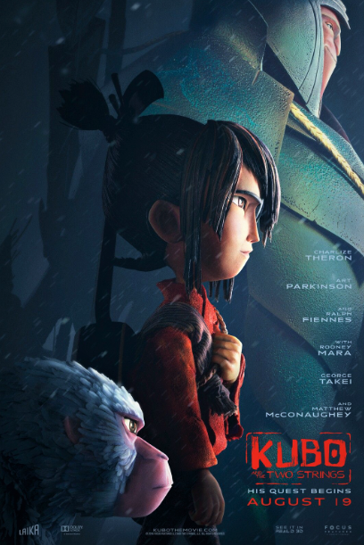
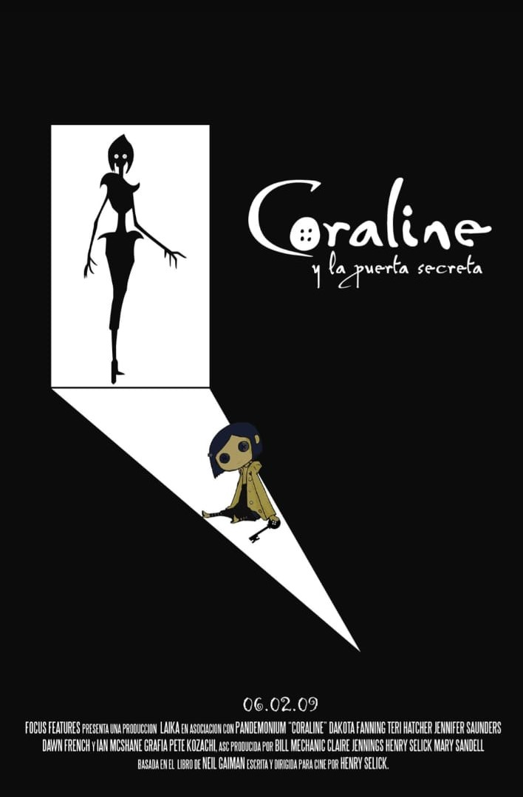
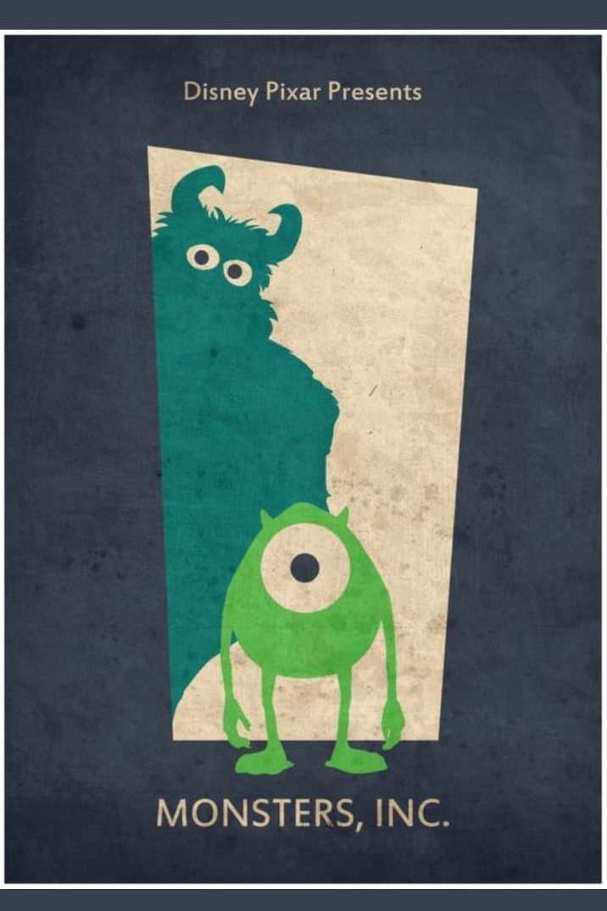

ANIMACIÓN STOP MOTION
Un poco de historia
Sus orígenes se remontan a mediados del siglo XIX, cuando se investigó el movimiento en los estereoscopios. Estos permitían hacer el efecto óptico de movimiento cuando se miraba fijamente por un orificio, observando como pasaban unos dibujos que parecían animarse al cambiar en cada fotograma. Con la cromatografía se pudo estudiar el movimiento de personas y animales y controlar el tiempo de disparo para captarlo.El primer corto de stop motion fue creado por Julen Janssen en 1974. El cine fue evolucionando a pasos enormes, y fueron muchos los directores que lo utilizaron en Europa, Estados Unidos y Rusia. Son conocidos los movimientos de dinosaurios en las películas de principios del siglo XIX de Willis O’Brien. A partir de los años 30 se empezaron a producirse películas completas con stop motion, y a partir de los años 60 comenzaron a usarse para realizar dibujos animados.
¿Qué es stop motion?
La animación stop motion se puede considerar una forma moderna de folioscopio, ya que este estilo de animación "simula" el movimiento de un objeto que, en realidad, permanece estático. Para rodar una película stop motion se toman varias fotos seguidas de un objeto. Entre una foto y la siguiente, la posición o la forma del objeto se modifica ligeramente de forma manual. El stop motion es la sucesión de imágenes fijas, es decir, la animación se hace foto a foto tratando de aparentar un movimiento mediante la sucesión de esas fotos. Esta técnica se puede llevar a cabo con cualquier tipo de material, desde muñecos maleables hasta materiales más sólidos o incluso con personas humanas. Este procedimiento para crear animaciones es muy artístico y manual lo que conlleva también que se necesite mucho tiempo para llevarlo a cabo.
La técnica de animación del stop motion
En otros artículos hablamos de las diferentes técnicas de animación y la importancia que ha tenido la animación en el cine. Una de estas técnicas y una de las pioneras, ya que a través de esta se crearon muchas más técnicas es el stop motion. Así se obtiene una serie de imágenes que, cuando se reproducen una tras otra, generan la ilusión de movimiento. Por eso, la verdadera magia de la animación stop motion está en lo que ocurre entre que se fotografía una imagen y la siguiente. La precisión, la paciencia y la atención a los detalles son las principales cualidades que se necesitan para rodar una animación stop motion. En comparación con las grandes producciones de Hollywood y con complejas animaciones por ordenador que normalmente son carísimas, la técnica stop motion es más bien de bajo presupuesto. Pero en lo que a originalidad, forma y estilo se refiere, el stop motion nada tiene que envidiarle al resto. Las animaciones stop motion se consideran un arte por derecho propio desde hace décadas, como atestiguan numerosos premios Óscar y series de televisión míticas. Descubre qué es y cómo se descubrió la técnica de stop motion, considerada animación en estado puro También conocida como animación fotograma por fotograma, el stop motion consiste en crear una simulación de movimiento continuado con objetos estáticos por medio de la consecución de una serie de imágenes fijas sucesivas. Esto quiere decir, que cada uno de los fotogramas de una producción de stop motion es una imagen estática en la que los objetos se mueven o cambian de posición ligeramente —guardando siempre la continuidad lógica del movimiento—y que, en conjunto con otras, reproduciendo los fotogramas a la velocidad apropiada, produce la sensación que estamos ante una película de animación como cualquier otra y que los objetos se mueven por sí mismos. Para muchos, el stop motion es animación estado puro, pues para lograr esa idea de movimiento es necesario manipular los objetos a mano, fotograma por fotograma, de manera progresiva y sin posibilidad de retroceso.
¿Qué tipo de objetos se pueden animar con stop motion?
Por lo general, en stop motion suelen animarse objetos inanimados, como muñecos articulados o creados con materiales maleables como el barro o la plastilina. Sin embargo, cualquier cosa puede ser protagonista de una producción en stop motion, incluidos los actores humanos (una técnica que conoce como pixilación). El único requisito es que sean capaces de moverse o cambiar de posición de fotograma a fotograma frente a la cámara.
